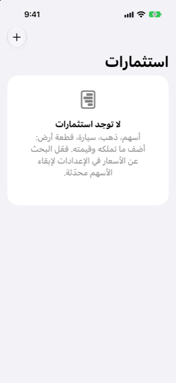

الدليل › استثمارات
الاستثمارات والممتلكات
الأسهم والصناديق والذهب: ما تملكه، وما قيمته، وأرباحك.
تعرض شاشة الاستثمارات ما تملكه وقد وضعته قيمةً عليه: الأسهم والصناديق والذهب والمعادن الأخرى والعقارات والمركبات وأي شيء آخر تضيفه. تجيب في مكان واحد عن سؤالين: ما قيمة ممتلكاتك الآن، وما الأرباح التي حققتها.

متى تستخدمه
- تملك أسهمًا أو صناديق أو ذهبًا أو أصلًا آخر وتريد احتساب قيمته ضمن ماليتك.
- تشتري المزيد من شيء ما، أو تبيع بعضه، وتريد أن تُحسب التكلفة والعائدات والأرباح.
الممتلكات تقع في نظرة عامة، تحت استثمارات. وتظهر العناصر نفسها أيضًا تحت الحسابات، الاستثمارات.
خطوة بخطوة
إضافة ممتلك
- افتح نظرة عامة، ثم استثمارات، ثم انقر زر إضافة (علامة الزائد).
- اختر النوع: سهم أو صندوق، عقار، مركبة، ذهب أو معدن آخر، أو غير ذلك. يحدد النوع ما تقدمه صفحة الممتلك، مثل حقل رمز التداول.
- أدخل الاسم والعملة وعدد الوحدات وقيمة الوحدة الواحدة اليوم.
- للسهم أو الصندوق، أدخل رمز تداوله (مثل
WVRA.L) إن أردت البحث عن سعره على الإنترنت. - في التكلفة (اختياري)، أدخل ما دفعته إجمالًا. اتركه فارغًا، أو أدخل 0، للأسهم التي استلمتها مجانًا، مثل وحدات RSU المكتسبة. فهي لا تكلفك شيئًا، لذا تُحسب قيمتها كلها أرباحًا.
- تحت مدفوع من، اختر حسابًا إذا كنت تشتريه الآن، أو مملوك مسبقًا إذا لم يكن يجب أن يتغير رصيد أي حساب.
إبقاء القيمة محدثة
- افتح صفحة الممتلك. تحت تحديث القيمة، أدخل الكمية وقيمة الوحدة الواحدة، ثم انقر حفظ.
- لتصحيح رقم قديم، انتقل إلى القيم المسجلة وانقر القيمة. واسحب إحداها لحذف خطأ.
- في صفحة الممتلك، انقر التكلفة لتصحيح ما دفعته. هذا يصحح السجل؛ ولا يتغير رصيد أي حساب.
- انقر المزيد لإعادة تسميته أو تغيير نوعه، أو استخدم شراء المزيد… وبيع….
أحدث قيمة مسجلة هي المعتمدة، والقيمة التي تكتبها تتفوق على قيمة مجلوبة من اليوم نفسه. وحتى تُسجل قيمة للممتلك، يظهر سطره بسعر التكلفة، لا يوجد سعر بعد ويُقدَّر بما دفعته.
شراء المزيد
- في صفحة الممتلك انقر المزيد، ثم شراء المزيد….
- أدخل الوحدات المضافة وسعر الوحدة اليوم وما دفعته إجمالًا. يُعبأ الإجمالي تلقائيًا بعدد الوحدات مضروبًا في السعر حتى تكتب رقمك؛ وأدخل 0 للأسهم المكتسبة أو الممنوحة مجانًا.
- تحت مدفوع من، اختر الحساب الذي دُفع منه، أو بدون حساب (مدفوع مسبقًا أو مجاني).
- تحقق من معاينة بعد ذلك — الوحدات والتكلفة الإجمالية ومتوسط تكلفة الوحدة — ثم انقر حفظ.
بيع
- في صفحة الممتلك انقر المزيد، ثم بيع….
- أدخل الوحدات التي تبيعها (الكل هو الافتراضي) وسعر الوحدة وأي رسوم والتاريخ.
- اختر تذهب الأموال إلى: الحساب الذي يستقبل المال. وإذا كان بعملة أخرى، أدخل أيضًا المبلغ الذي وصل فعلًا، لكي يحتفظ Damla بالطرفين وبسعر الصرف الذي يفترضهما.
- تحقق من معاينة ما الذي يفعله هذا — العائدات والرسوم وما تستلمه وتكلفة هذه الوحدات والربح أو الخسارة — ثم انقر بيع.
يستقبل الحساب العائدات بعد خصم الرسوم، وتُسجل الرسوم كتكلفة. وتحمل الوحدات المبيعة نصيبها من التكلفة بمتوسط تكلفة الوحدة؛ ويُسجل الفارق دخلًا في أرباح الاستثمار، أو تكلفة في خسائر الاستثمار. وبيع كل شيء يزيل الممتلك من استثماراتك ومن صافي ثروتك؛ ويبقى سجله.
قراءة التقرير
تعرض البطاقة الرئيسية أعلى شاشة الاستثمارات ما تساويه ممتلكاتك (قيمته الآن) وأرباح الاستثمارات، مع نسبة مئوية عند وجود تكلفة تُقاس الأرباح عليها. وتحتها:
- أين هو: مخطط دائري مجوف لتوزيع الممتلكات، كل شريحة موسومة بالاسم والنسبة والقيمة.
- يعرض سطر كل ممتلك قيمته، وخط اتجاه صغير عند وجود قيمتين مسجلتين على الأقل.
- وتُعرض الأرباح والخسائر بعلامة وسهم، ونسبة مئوية حيث يمكن حسابها — لا باللون وحده أبدًا.
من الجيد أن تعرف
- البحث عن الأسعار اختياري ومعطّل افتراضيًا: مع رمز تداول محفوظ والمفتاح مفعّل، تُحدَّث الأسعار نحو مرة واحدة يوميًا، ولا يُرسل إلى أي مكان سوى رموز التداول. انظر الأسعار وأسعار الصرف.
- العقار المرتبط به إيجار يعرض الإيجار المستلم خلال آخر 12 شهرًا وعائده الإجمالي. انظر العقارات والسيارات.
- تُحتسب ممتلكاتك في صافي ثروتك بالقيمة التي أعطيتها لها، لا بالتكلفة فقط. انظر الاتجاهات وصافي الثروة.
ذو صلة
هل هناك شيء غير واضح أو ناقص؟ اكتب إلى support@raveniq.ai واذكر الصفحة.